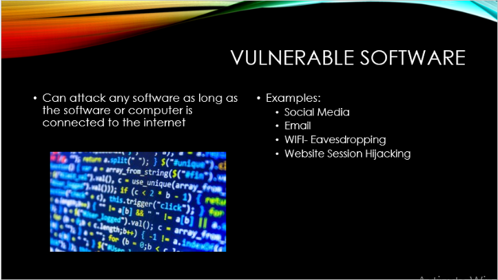
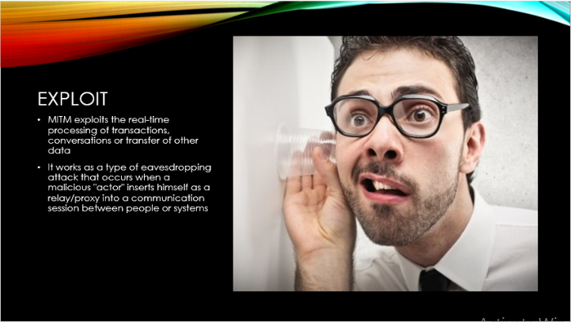
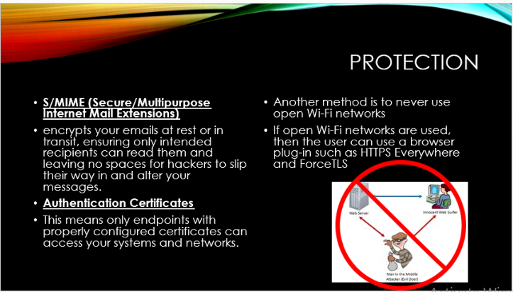

Malware Presentation
The following three pictures are the most important slides in the presentation about
the Man in the Middle Attack. The first slide describes what types of devices are vulnerable to the malware. The second
slide goes over how the attack works and why it works. The third slide discusses how to protect and prevent the possibility
of being attacked by this malware.



My partner and I did extensive research on this topic from its origin, to how it works,
to historical instances in which there was a major attack using this malware, to even how it has evolved in today's society.
I learned more about malware and its effects on the current world of today and that there are ways to prevent these attacks
similarly to how a person fights against infection. Clean up after yourself, don't touch potential diseases, and to not trust
scams.